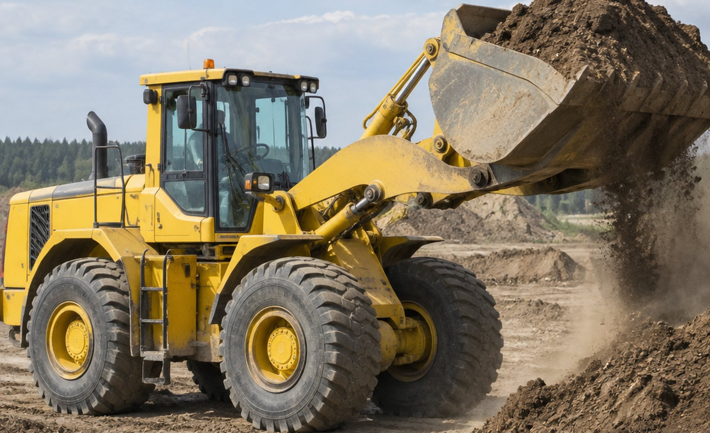
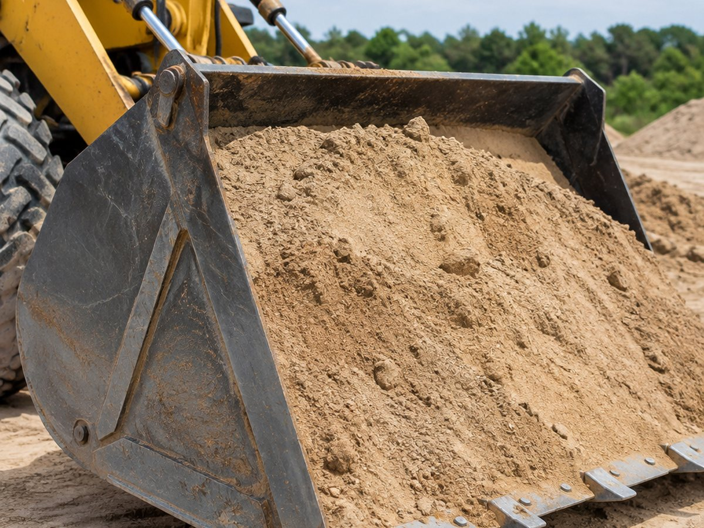
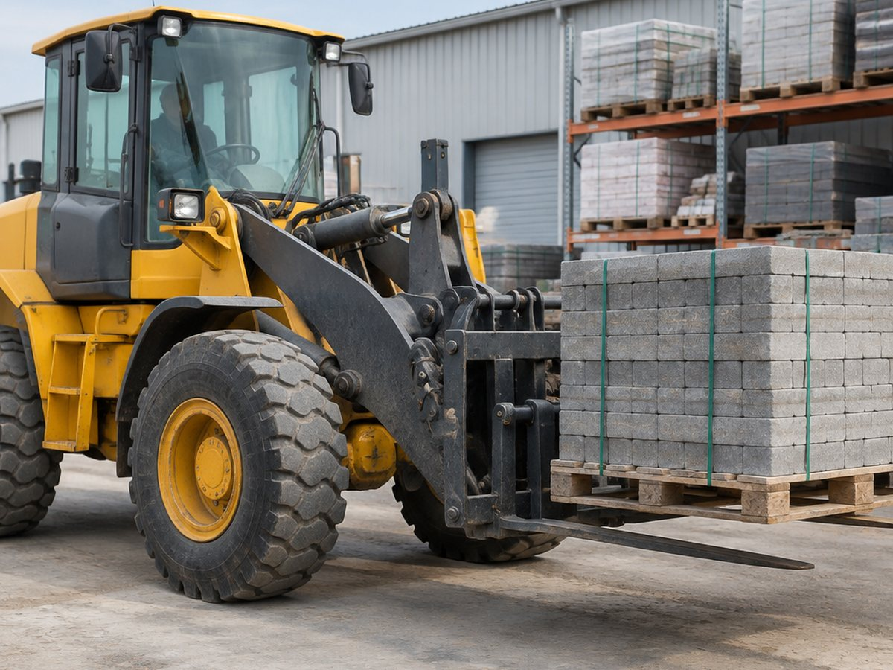
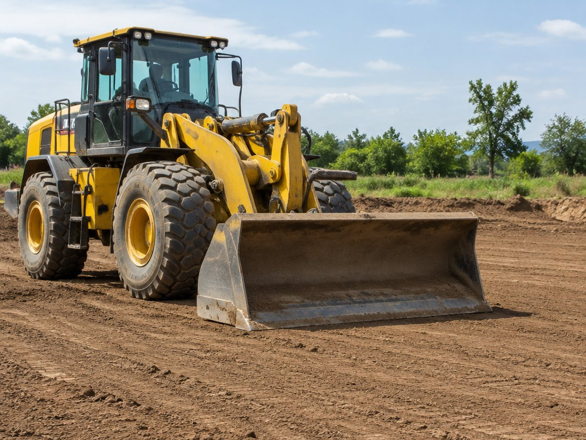

Погрузчик
с экипажем
на ваш объект
Амкодор 332C4 и 342C4, четыре машины в разных частях Минска. Ковши 2,0 и 2,4 м³, вилы, стрела, паук, стропы. Экипаж подскажет, как сделать быстрее и дешевле.
Чем закрываем
Участок от котлована
до чистого двора
Одна машина с навесным закрывает землю, погрузку, планировку и мусор. Не нужно гонять три единицы техники.
Земляные работы
Котлованы, траншеи, обратная засыпка, выемка грунта. Работаем по разметке или по проекту заказчика.
Погрузка и разгрузка
Стройматериалы, поддоны, блоки, песок, щебень, строймусор. Ковши 2,0 и 2,4 м³, вилы для паллет.
Планировка и срезка
Снятие грунта, срезка растительного слоя, планировка участка под благоустройство.
Вывоз мусора
Погрузка строительного мусора в контейнер или самосвал заказчика.
Такелаж
Стрела, паук и стропы: тяжёлые и неудобные грузы, монтаж конструкций.
Буксировка техники
Перемещение техники и грузов на короткое расстояние по площадке.
Парк
332C4 и 342C4
Разница в основном в ковше и габаритах. Меньшая машина проходит в узкий двор, большая быстрее на объёме.
Амкодор · 332C4
Маневренная машина для тесных дворов
Ковш 2,0 м³, грузоподъёмность до 3 500 кг. Проходит в проезды, где большая техника не развернётся.
- Ковш
- 2,0 м³
- Грузоподъёмность
- до 3 500 кг
- Навесное
- ковш, вилы, стрела, паук
- Где уместна
- дворы, подъезды, благоустройство
Амкодор · 342C4
Объём и скорость на площадке
Ковш 2,4 м³, грузоподъёмность до 4 200 кг. Быстрее там, где есть место для разворота.
- Ковш
- 2,4 м³
- Грузоподъёмность
- до 4 200 кг
- Навесное
- ковш, вилы, стрела, паук
- Где уместна
- котлованы, планировка, мусор
Подбор
Что у вас за задача
Выберите работу, покажу машину, навесное и что нужно уточнить до выезда.
Расчёт
Сколько циклов
и часов
Прикидка по объёму, ковшу и площадке. Это не смета, а способ понять, хватит ли одной смены.
Ориентир по циклам: 45 с на свободной площадке, 65 с там, где тесно. Реальное время зависит от подъездов и высоты отвала.
Работы
Как это выглядит



Порядок
От звонка до смены
Смену считаем по часам работы, минимум 4 часа. Доставка на объект считается отдельно — обсудим при заявке.
Заявка
Говорим по телефону: адрес, объём, что нужно сделать. Подсказываем, хватит ли 4 часов.
Машина и навесное
Выбираем 332C4 или 342C4 и навесное под задачу: ковш, вилы, стрела, паук.
Доставка
Привозим на объект и увозим после смены. Время доставки в смену не входит.
Работа
Экипаж работает, подсказывает по ходу: где снять больше, где не тратить часы.
Вопросы
Коротко о главном
Сколько стоит смена?
Считаем по часам работы, минимальный выезд — 4 часа без учёта доставки. Точную сумму назовём по телефону, когда поймём объём и адрес: в центре и за городом условия разные.
Что входит в 4 часа?
Только работа на объекте. Доставка машины на объект и обратно считается отдельно и в смену не входит.
Какое навесное есть?
Ковши 2,0 и 2,4 м³, вилочный захват для поддонов, стрела, паук, стропы и чалки. Скажите, что грузите, подберём.
Работаете за городом?
Минск и Минская область. Возможны командировки по Беларуси — обсуждаем отдельно.
Есть скидки?
При долгосрочной аренде действует система скидок. Условия зависят от количества смен, обсуждаем при заявке.
Заявка
Оставьте номер
Перезвоню, уточню объём и скажу, какая машина нужна и сколько часов реально займёт.